Home
Welcome
Welcome to our website dedicated to our homestay in the rural province of Chiang Rai, located in the village of Ban Rimkok, only 15 minutes driving from Chiang Rai city center. We build our homestay close to the Mea Kok river, over looking rice fields and the mountains, all together form a beautiful picture, every day a little bit different.
Sawasdee

ขอต้อนรับสู่เว็บไซด์ของเราทุ่มเทให้กับโฮมสเตย์ของเราในหมู่บ้านชนบทของจังหวัดเชียงรายตั้งอยู่ในหมู่บ้านริมกก เพียง 15 นาทีขับรถจากใจกลางเมืองเชียงราย โฮมสเตย์ของเราอยู่ใกล้กับแม่น้ำกก สามารถมองเห็นแม่น้ำและเห็นเรือหางยาววิ่งผ่านในฤดูน้ำหลาก รายล้อมด้วยทุ่งนาและภูเขาอันเขียวขจี สัมผัสกับอากาศบริสุทธ์ ธรรมชาติ วิถีชีวิตแบบชนบท เข้าด้วยกันในรูปแบบภาพที่สวยงาม
About
About Ban Lom Jen homestay
Our home stay is located in the small village of Rimkok, Meayao County only 15 minutes drive from Chiang Rai City and its many tourist attractions an about 25 minutes from Chiang Rai International Airport. You will find our home stay in the middle of rice and corn fields next to the Mae Kok river and with a fantastic view over the mountains. It is a family run business, and we will do anything to make your stay a pleasant one.
We started building our home stay at the end of 2011 and it was finished just after Songkran 2012 (the Thai new year). First we opened our restaurant on the first floor. Where we serve Thai and Western, breakfast, lunch, snacks, diner and drinks.
Our property consists of 2 buildings One is the restaurant building and the other is the guest rooms building. The guest room building has 4 rooms Superior. They all come with airconditioning and a fan, en suite bathroom, LCD cable TV, a small fridge, coffee and tea making facilities, free bottled water, balcony with mountain view.
In and around our property we offer our guests free WiFi. Laundry service is available, motor-bike and bicycle service is available ( advanced notice preferred ) Free parking around the building and for the bicycle tourist who bring their own bikes we have a locked storage room available inside the building. Transport service to the airport or bus terminal is possible
The home stay is a perfect starting point for bicycle trips in the area for the casual and more well trained riders. Going around the area on an motor bike is also very nice. That way you can stop at all the wonderfull things our area has to offer, for instance, waterfalls, temples, local markets etc. Boat trips on the Mea Kok River is one of the things many people enjoy doing. This way you can stop at the Ban Rummit elephant village, visit the local Karen hill tribes, go to the nature park and the hot-springs where you can go for a swim or get a massage. Because the river runs through Chiang Rai city it can take you all the way from our home stay to there to enjoy some food or shopping.
Should you have any questions regarding tourist information or transportation please feel free to ask, and we will try our best to help you.
Thank you very much and we hope to welcome you soon to Chiang Rai.

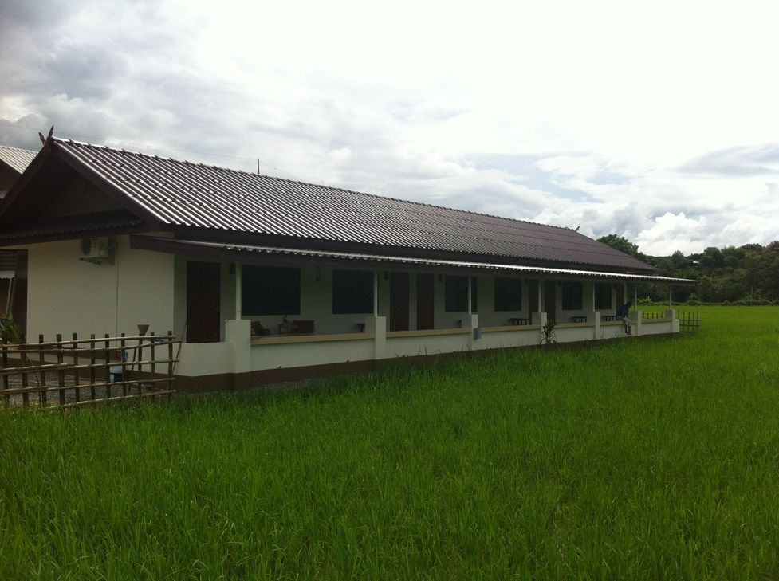

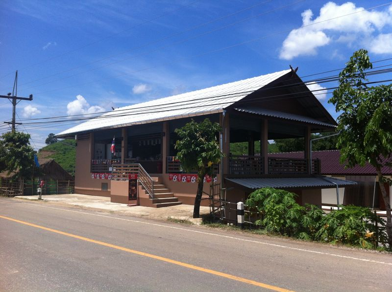
" We just loved this place! The owners made us feel so welcome, attending to our needs and sharing stories. They invited us to join a bbq in the evening, offered us a ride to center when they were going, etc. The view from the back terrace (with a nice relaxing area) is green rice fields and hills. And from the restaurant/reception you can see the river flowing by. The food was delicious, and for breakfast we got to choose what we want. The place is only few months old, everything is new and clean. And the wi-fi connection is good"
Rooms
Superior room

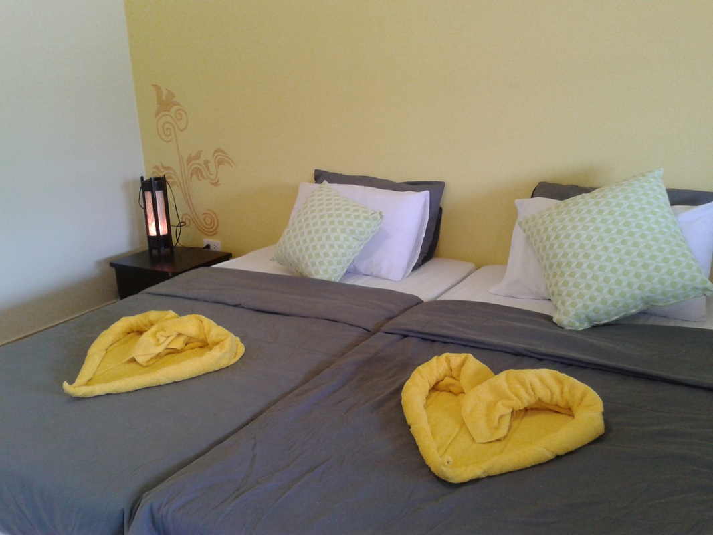
Superior Room - 24m2
Double or twin bed, wardrobe, aircon, fan, 24" LCD cable TV, free WiFi, coffee and tea making facilities, free bottled water, balcony, private bathroom : 6m2, hot water, shower, toilet, sink, mirror, free toiletries, towels, max occupancy 2 adults Breakfast is included in the room rates


Superior Room
Superior room
We offer 4 x superior rooms they are all 24m2 and come with :
Double or twin bed, wardrobe, aircon, fan, 24" LCD cable TV, free WiFi, coffee and tea making facilities, free bottled water, balcony, private bathroom : 6m2, hot water, shower, toilet, sink, mirrror, free toiletteries, towels, max occupancy 2 adults (extra bed is possible upon request)
For room rates and booking click here


Trips


Motorbike
Motorbike trips
Here we will list some of the standard motor bike tours you can do start and finish at Ban Lom Jen Homestay. We offer a Honda Click 115cc Automatic, can fit 2 adults
Karen Elephant Village - Hanging Bridge - Ban Pha Soet Hot Springs - Waterfall - Doi Incee
+/- 50 km of asphalt streets and a small stretch of dirt road. Some up hill and down hill. Things to see on the way, the elephant village, beautiful sceneries along the Mae Kok river, relax at the hot springs restaurant, go to the waterfall, and see the Big Buddha of Chiang Rai.
Doi Incee - Big Budha - Ban Boon Rawd - Nam Tok Khun Kon - Wat Rong Khun
+/- 60 km of asphalt and some dirt roads, some climbes in the beginning. Things to see on the way, Doi Incee or the big white Budha of Chiang Rai, stop under at the foot of the mountain and walk up the 700 steps that lead to the big Budha, with a fantastic view of the Chiang Rai coutryside. Ban Boon Rawd or Singha farm, a beautiful active farm where they harvest tea and fruit and a nice restaurant. Nam Tok Khun Kon, beautiful waterfall well hidden in the jungle mountains, but worth the 1,5 km hike if you are up for it. If you don't want the hike, it is still a nice trip up the mountain with the motor bike. Wat Rong Khun or the White Temple, a must see in Chiang Rai also here possibility to stop and relax, eat and drink.
Wat Rong Khun - Chiang Rai City Tour - Chiang Rai Beach
+/- 50 km of asphalt, minimal climbimg, Wat Rong Khun or the white temple a must see attraction in Chiang Rai, City tour see the Golden Clock, King Meng Rai, various Temples and other sites to see in downtown Chiang Rai and a visit to the local Tessaban Market and Chiang Rai Beach
Persononalized trip
Based on your requests and ability we will try and set you u with the perfect trip to fit your needs and expectations
These are just some examples of what is possible to do in a 1 day trip around Chiang Rai, when you rent a bicycle from us we will supply you with a detailed map and route so you can do these trips by yourself or if you would rather do it with a tour guide this is also possible. The advantage of the tour-guide of course is that they can tell you some more information and show you some things you may not find by yourself.

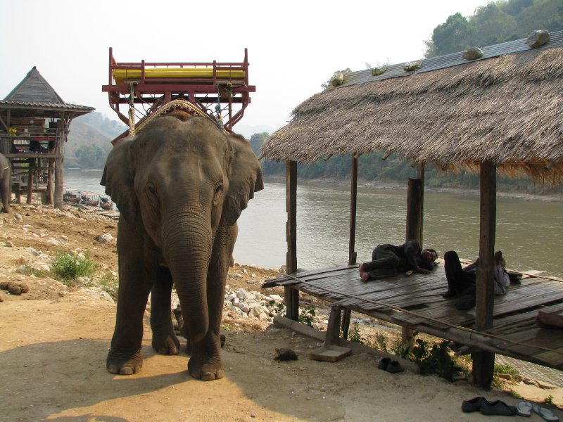

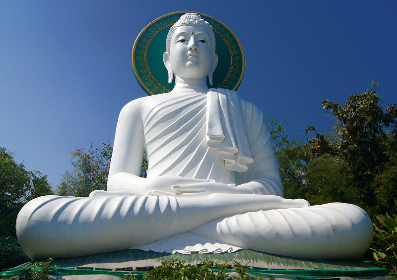

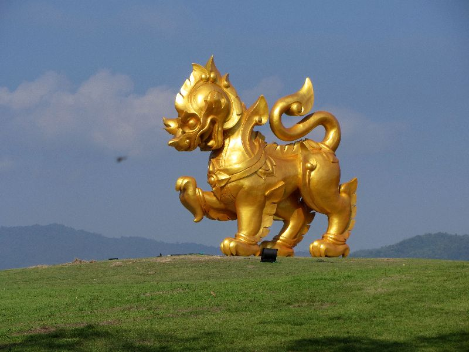

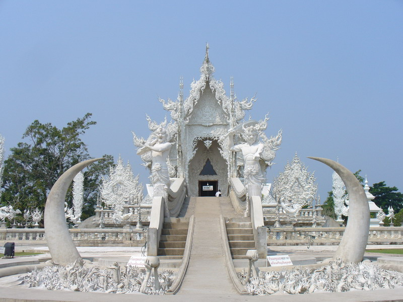

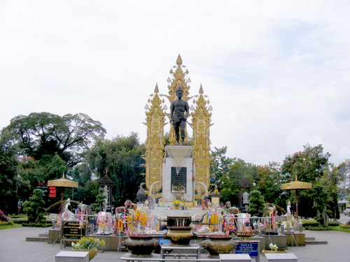
Bicycle
bicycle trips
Here we will list some of the standard bicycle trips you can do start and finish at Ban Lom Jen Homestay. The trips differ in lenght and in difficulty, some are better suited for the trained cyclist, but most of them can be done by all people. We supply good ATB-mountainbikes, with front spring suspension and 24 gears. If you have special request for the bike you would like please let us know, and we will try to find you a good fit.
Karen Elephant Village - Hanging Bridge - Ban Pha Soet Hot Springs
+/- 40 km of asphalt streets and a small stretch of dirt road. Some up hill and down hill. Things to see on the way, the elephant village, beautiful sceneries along the Mae Kok river, relax at the hot springs restaurant. MEDIUM/HEAVY
Doi Incee - Big Budha - Ban Boon Rawd - Wat Rong Khun
+/- 45 km of asphalt and some dirt roads, some climbes in the beginning. Things to see on the way, Doi Incee or the big white Budha of Chiang Rai, stop under at the foot of the mountain and walk up the 700 steps that lead to the big Budha, with a fantastic view of the Chiang Rai coutryside. Ban Boon Rawd or Singha farm, a beautiful active farm where they harvest tea and fruit and a nice restaurant. Wat Rong Khun or the White Temple, a must see in Chiang Rai also here possibility to stop and relax, eat and drink. MEDIUM
Chiang Rai City Tour - Chiang Rai Beach
+/- 35 km of asphalt, minimal climbimg, City tour see the Golden Clock, King Meng Rai, various Temples and other sites to see in downtown CHiang Rai and a visit to the local Tessaban Market and Chiang Rai Beach. EASY/MEDIUM
Mae Yao - Huai Mae Sai
+/- 25 km of asphalt and dirt road, this is a short distance but allot of uphill, have to be trained to do this trip, but the most beautiful views are in hard to reach places ! This trip can be extended with for instance a trip towards the Elephant Village +15km, or if you are up for it a small City Tour +20km. HEAVY
pERSONALIZED TRIP
Based on your requests and ability we will try and set you u with the perfect trip to fit your needs and expectations
These are just some examples of what is possible to do in a 1 day trip around Chiang Rai, when you rent a bicycle from us we will supply you with a detailed map and route so you can do these trips by yourself or if you would rather do it with a tour guide this is also possible. The advantage of the tour-guide of course is that they can tell you some more information and show you some things you may not find by yourself.

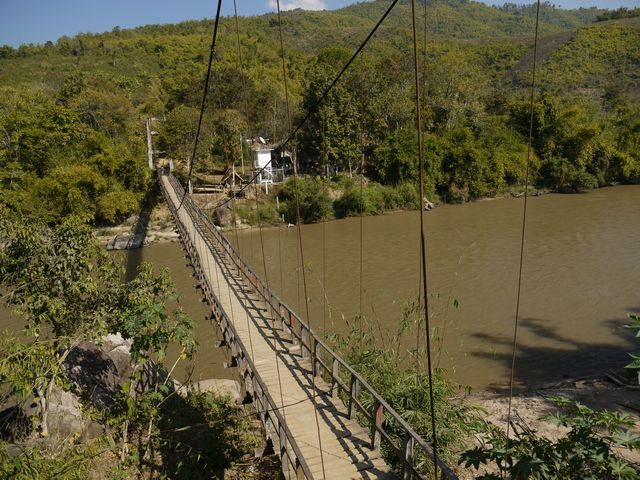

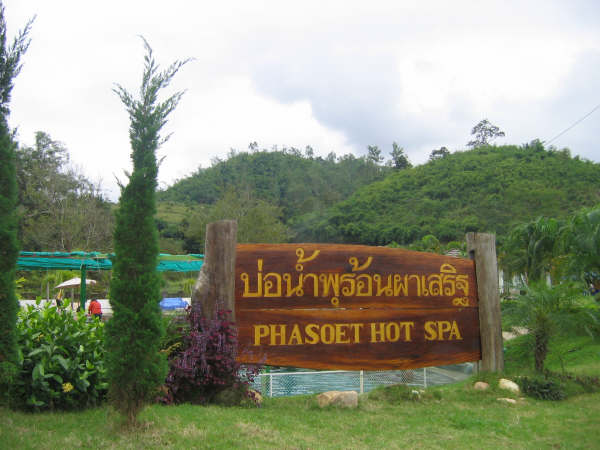

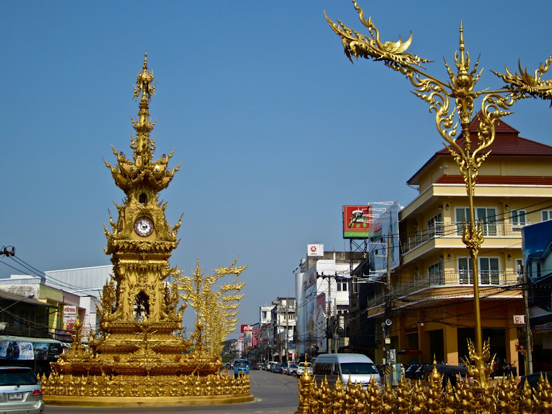

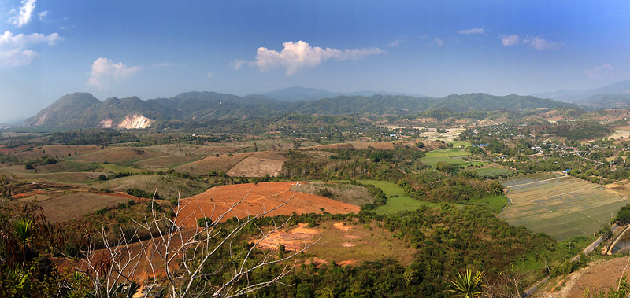

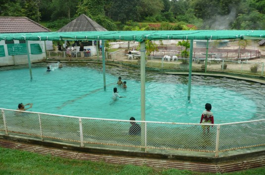
Trekking
Trekking
One Day
Pick up time: 8.30 am.
Transport: Pick up by car or Songthaew. Then take around 30 minutes to drive to Akha village where we will start to trek. Walking: After we get to village, we will start to trek and follow a small river and see how Akha agricultures as such, tea, banana and coffee. Then we will hike up and down hill through bamboo forest and with the view of highland farming, mountain rice fields, pineapple plantation. After trek with the Great view of high land agricultures we will take around 1.5 hour to continue to trek up down hill in the jungle through Huay Mae sai river where we will break to cook for lunch. What to cook for lunch?:we will have sticky rice will cook by the bamboo, pork BBQ and eggplant salad„this is akha style cooking, also you can join to cook and have some experience . After launch we will take 15 minutes to trek down to the waterfall to swim and relax. After waterfall will continue to take around 1.5 hour to go back to Akha village where we will get the car to back to the city.
Price
1 person = 2,500 B.
2-3 person = 1,500 B.
4 person up = 1,300 B.
Included, transport, guide, lunch. Exclude, drinks.
Things to bring, Mosquito spray, swimming suit
two Day one Night
Pick up time: 9 am.
Transport: Pick up by car or Songthaew. Take around 30 minutes, to go to Baan Huy Khom village where we will start to trek. (we will stop at the local restaurant to prepare some food for lunch) Walking: we will walk pass local agriculture, rice field, pineapple field then walk up through bamboo forest then trek up and down through the jungle to waterfall for relax and swim. After that will heading to Akha village where we will stay overnight, For our dinner we will have local food, you can join our guide and the family to prepare and team how to cook the special local food for your dinner. After dinner we will share about the hill tribes culture and history and local games.
Day 2: 8.30 breakfast. 9.am. we will start to trek and follow a small river and see how Akha agricultures such as, tea, banana and coffee. Then we will hike up and down hill through bamboo forest and with the view of highland farming, mountain rice fields, pineapple plantation. After trek with the Great view of high land agricultures where we will break for bamboo cooking and BBQ with local style for lunch. After lunch continue to trek down to the car and then take 5 minutes to drive to the hot spring for swimming and relax before back to city.
Price
1 person = 4,800 B.
2-3 person = 2,800 B.
4 person up = 2,500 B.
Included, transport, guide, meals accommodation, ticket for the hot spring. Exclude, drinks.
Things to bring, Mosquito spray, swimming suit
Three Day two Night
Pick up time: 9 am.
Transport: Pick up by car or Songthaewl. Take around 30 minutes to drive to Baan Huay Khom village where we will start to trek. (on the way we will stop at the local restaurant to prepare some food for lunch) Walking: walk pass local agriculture, rice field, pineapple field then walk up through bamboo forest then trek to Akha village where we will stay overnight. For our dinner we will have local food, you can join your guide and family to prepare and learn how to cook local food. After dinner we will share about the hill tribes culture and history and local games.
Day 2: 8.30 breakfast. After breakfast we will start to trek at 9.30am. then we will take 1 hour to walk to the Huay Measai waterfall, we will take some rest and after we will heading to trek up to the top of Doi bor mountain and the Great view (it's 1,000 meters high)but before we get the the view point we will break for lunch, so we will cook local food, such, cooking sticky rice by the bamboo, BBQ,and local eggplant salad. After lunch continue to hike up to the view point. After that we will continue to walk down to the place where will camping and enjoy our special night, also for dinner we will cook the Lahu tribes local food, and enjoy with the Great view of Chiang Rai city.
Day 3 8.30 am. Breakfast. Walking: After breakfast we will start to trek and most of the last day is trekking pass the view of the highland farming and jungle down to the car, and then take car about 10 minutes to drive to the hot spring for lunch and relax before back to city, will be back to city about 3.30pm.
Price
1 person = 7,000 B.
2-3 person = 3,900 B.
4 person up = 3,500 B.
Included, transport, guide, meals accommodation, ticket for the hot spring.
Exclude, drinks. Things to bring, Mosquito spray, swimming suit

Car
Car trips
Here we will list some of the standard day trips we can organize for you, in private aircondition car, english speaking driver/guide.
White Temple, Black House, Long Neck Karen, Akha and Lahu Villages, Mae Sai, Golden Triangle, Chiang Sean
Wat Rong Khun or the white temple and the Black house are an example of Chiang Rai Art Style, next its the local hilltribe villages of the Karen, Akha and Lahu people to see where and how they go about their lives. On to Mae Sai, the most northern point of Thailand, this is the Thai/Myanmar border, from here we go to The Golden Triangle where you can see, Myanmar, Laos and Thailand connecting at the Maekong River. You can visit the opium museum or take a short trip across the river to visit a Laos market. In CHiang Saen there will be a oppurtunity to visit some old ruines of the city and its temples (1260 AD). From here we drive back to Ban Lom Jen Homestay
Time - 9:00 - 17:00
Doi Mae Salong, Mae Sai, Golden Triangle, Chiang Saen
Doi Mae Salong and especially Kuomintang Yunnan Chinese settlement is where the biggest Tea plantations are, spectecular views, from the mountains and delicious tea tasting, on the way to Mae Sai there is an oppurtunity to stop at some hilltribe villages, Yao and Akha. In Mae Sai you will find the most northern point of Thailand, this is the Thai/Myanmar border, from here we go to The Golden Triangle where you can see, Myanmar, Laos and Thailand connecting at the Maekong River. You can visit the opium museum or take a short trip across the river to visit a Laos market. In CHiang Saen there will be a oppurtunity to visit some old ruines of the city and its temples (1260 AD). From here we drive back to Ban Lom Jen Homestay
Time - 9:00 - 17:00
Doi Tung, Mae Sai, Golden Triangle, Chiang Saen
Doi Tung is the mountain where we find the Royal Villa of the late King-mother, Mae Fah Luang, to help the local tribes she started a project to transform the mountain into a nursery for all sorts of flowers and plants, which resulted in a beautifully well designed and maintained flower garden where you can walk around, also her private house was here wich is now a museum you can visit, to give you a glimpse of Her life. From here we go to Mae Sai, where you will find the most northern point of Thailand, this is the Thai/Myanmar border, from here we go to The Golden Triangle where you can see, Myanmar, Laos and Thailand connecting at the Maekong River. You can visit the opium museum or take a short trip across the river to visit a Laos market. In CHiang Saen there will be a oppurtunity to visit some old ruines of the city and its temples (1260 AD). From here we drive back to Ban Lom Jen Homestay
Time - 9:00 - 17:00
Personalized trip
Based on your requests we will try and set you up with the perfect trip to fit your needs and expectations
These are just some examples of what is possible to do in a 1 day trip around Chiang Rai, when you rent a bicycle from us we will supply you with a detailed map and route so you can do these trips by yourself or if you would rather do it with a tour guide this is also possible. The advantage of the tour-guide of course is that they can tell you some more information and show you some things you may not find by yourself.
Price
2 person = 2500 B.

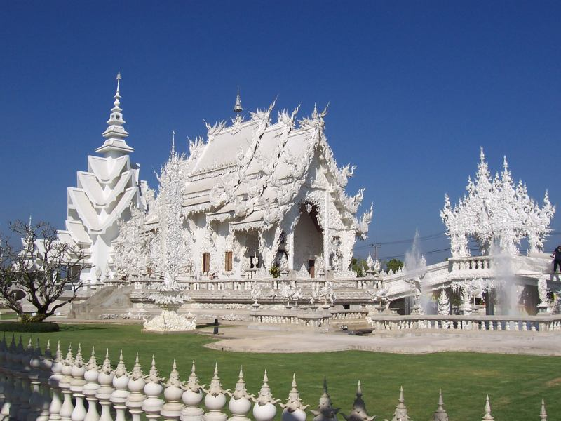

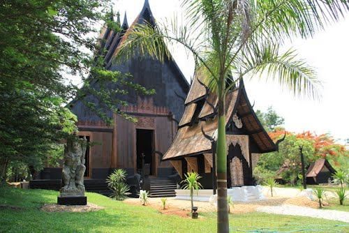

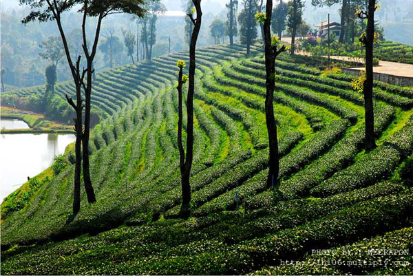

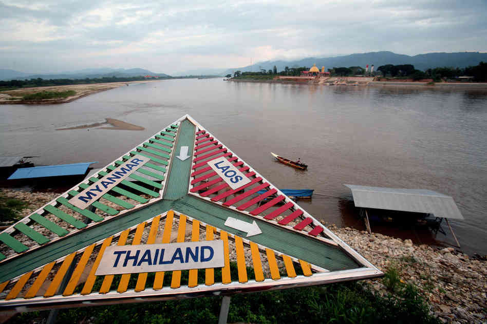

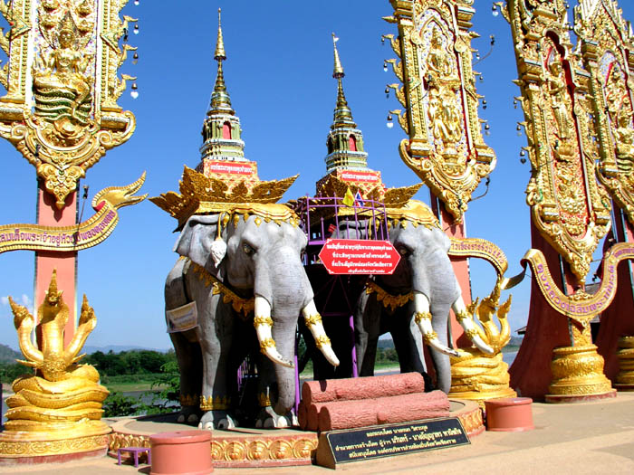
Packages
Our packages are a combination of the different TRIPS we offer as you can find on our website, through making a combination of tours and staying with us at our homestay we are able to offer you these at reduced prices, all trips can be personalized to fit your needs and expectations.
Highlights

3-day (4-night) Package - Highlights
transfer to/from homestay
welcome drink
4 nights stay incl breakfast
motorbike rental and maps - more info
taxi tour full day - more info
boat trip (+ hiking trip) full day
diner traditional northern Thai menu
Package price for 2 people - 8500 baht
Active

3-day (4-night) Package - Active
transfer to/from homestay
welcome drink
4 nights stay incl breakfast
motor bike rental and maps - more info
bicycle rental and maps - more info
boat trip and hiking full day
diner traditional northern Thai menu
Package price for 2 people - 6500 baht
2-day (3-night) Package - Active
transfer to/from homestay
welcome drink
3 nights stay incl breakfast
bicycle rental and maps - more info
boat trip hiking trip full day
diner traditional northern Thai menu
Package price for 2 people - 5500 baht
Disclaimer : all package prices are based on 2 persons sharing a double room, sharing 1 motor bike, with the use of 2 bicycles, includes 1xdiner for 2 people, and transfer only to bus station and airport in Chiang Rai. For further questions please lom.jen.homestay@gmail.comus.
Package Booking
Package Booking Form
Please fill in all the fields and we will confirm your booking within 48 hours.
Cooking with Son
Cooking with SOn
Cooking with Son is all about discovering the real Thai and especially North-Thai flavors. In the morning she will make some suggestions for the menu for that evening followed by a trip to our on site vegetable and herb garden to take a look at what we have that we can use for today's dishes, whatever we can not find in our garden we will get from one of the many local fresh markets, which is a great opportunity to see how Thai people go about buying and selling all their amazing foods .
The dishes to prepare can be all sorts of Thai specialties like : Yam Woon Sen, Pad Krapao, Nam Prik Ong, Kao Pad Nehm, and lets not forget the many curry dishes there are, if you have a favorite please let Son know so she can show you how to cook these delicious meals at home, including with tips and information on substitutions for ingredients you maybe can not find in your country or are hard to come by.
The cooking classes will take place at our Homestay, in the outdoor kitchen/bbq-area and if the weather is not very nice we will move to our restaurant kitchen. So don't worry all the pots, pans and utensils are available. Also you will receive a free gift pack with some spices herbs pastes, so when you are back home you can start cooking right away.
So come and cook with Son, and enjoy the real Thai food, and learn how to cook for your friends and loved ones back home.

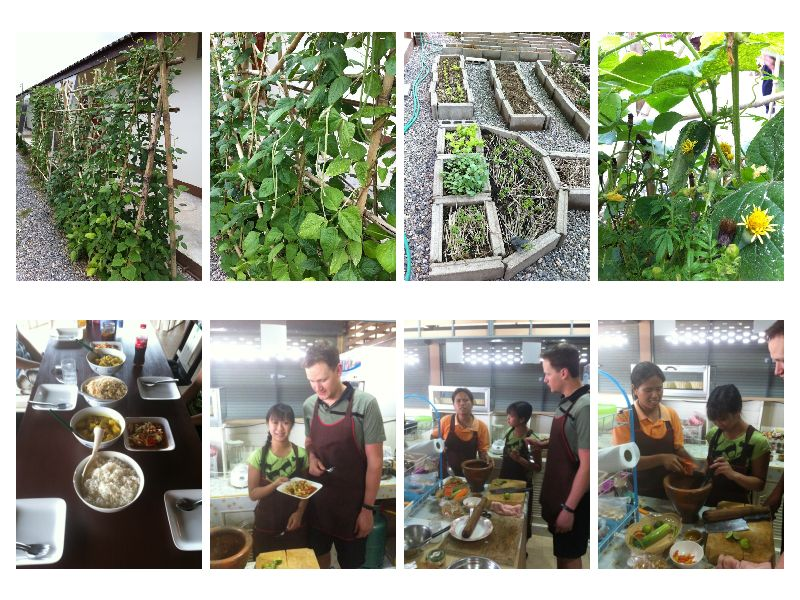


The Homestay
The Homestay


Contact
location
Ban Lom Jen Homestay
227 Moo 4, Maeyao
Muang Chiang Rai, Chiang Rai
57100, Thailand
ตั้งอยู่ที่
บ้านลมเย็นโฮมสเตย์
227 หมู่ 4 บ้านริมกก ตำบลแม่ยาว
อำเภอเมืองเชียงราย
57100
Contact information
Here you will find all the information you need to contact us :
Website - http://lomjenhomestay.weebly.com
Facebook - http://www.facebook.com/BanLomJen
Email - lom.jen.homestay@gmail.com
Telephone :
Son : +66 (0) 856222097 (Thai/Eng)
Line ID : banlomjen
Or fill in the contact form, and we will try and reply as quick as we can.
Map: 19.9389° N, 99.766661° E